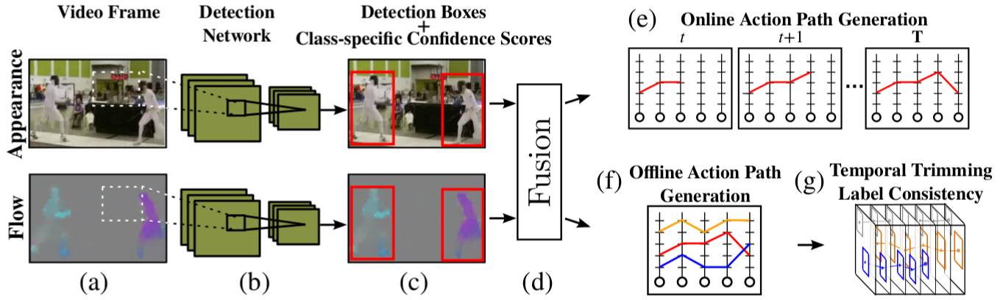
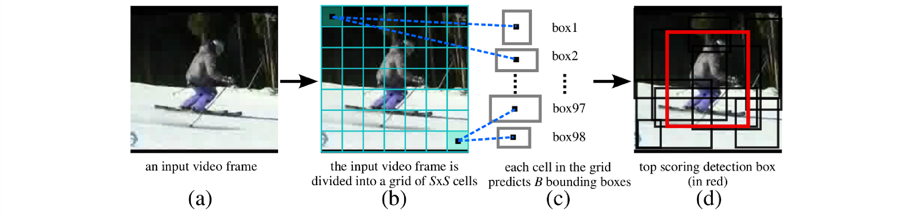
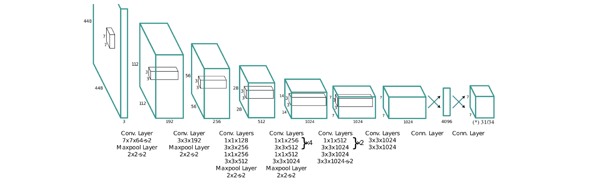
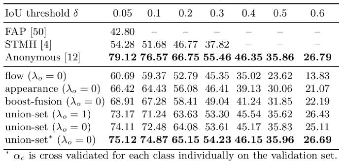
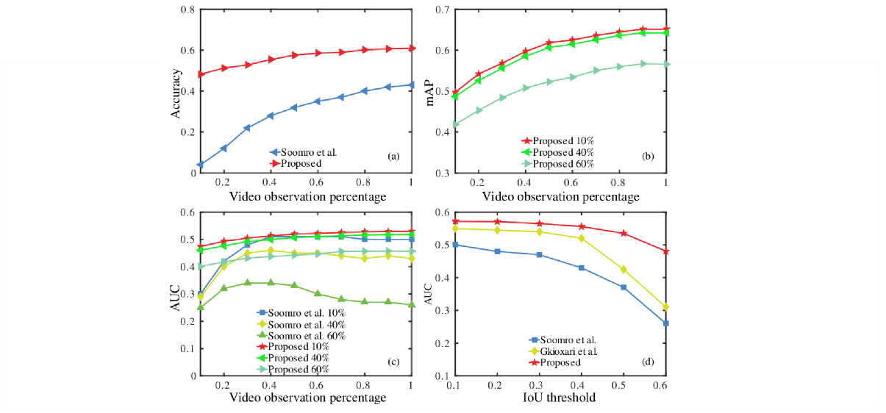

Action prediction and online action localisation in a `kick-ball' test video taken from J-HMDB-21 dataset. (a) to (d): A 3D volumetric view of the video with selected frames. At any given time, a certain portion (%) of the entire video is observed by the system, and the detection boxes (in red) are linked up to incrementally build an online space-time action tube. (e) A frame-level 2D view of the same video shows the predicted action label at different time intervals. The Ground-truth bounding boxes are depicted in green and the detection boxes are in red.
Abstract
In this work we propose a new efficient deep learning approach to spatio-temporal localisation (detection) and classification of multiple concurrent actions within temporally untrimmed videos, which is suitable for online action label prediction and localisation in real time. Our framework is composed of three stages. In stage 1, two end-to-end trainable YOLO convolutional neural networks are employed to regress and classify detection boxes in each video frame potentially containing an action of interest, one from optical flow and one from RBG images. In stage 2, appearance and motion cues are combined by merging the detection boxes and classification scores generated by the two networks. In stage 3, sequences of detection boxes most likely to be associated with a single action instance, called {action tubes}, are constructed incrementally and efficiently by dynamic programming, allowing the system to perform early action class prediction and spatial localisation in real time. We demonstrate the performance of our algorithm on the challenging UCF101 and J-HMDB-21 datasets in both the offline and online settings, achieving new state-of-the-art results and significantly lower test time detection latency across the board.
Related Publication:
Towards real-time action detection and prediction, Asian Conference on Computer Vision (ACCV), 2016.
Gurkirt Singh, Suman Saha, Fabio Cuzzlion
bibtex | project page | paper | suplementary material | codeOverview of the action detection pipeline with near realtime detection speed
At test time, (a) RGB and flow video frames are passed to (b) two separate YOLO detection networks. (c) Each network outputs detection boxes and class-specific confidence scores. (d) Appearence and flow detections are fused and linked up to generate class-specific action paths spanning the whole video for either (e) online action prediction and localisation or (f) offline spatiotemporal action localisation. (g) In the latter case action paths are temporally trimmed to form the final action tubes.

Integrated detection network (YOLO Network [*] ): (a) an input video frame is fed to the network; (b) input frame is divided into a grid of S x S cells; (c) each cell in the grid predicts B bounding boxes and their actionness scores; (d) the final outputs are the predicted bounding boxes and their class-specific confidence scores.

Block-diagram of the detection network (YOLO Network [*] ) architecture, showing its 24 convolutional layers followed by 2 fully connected layers. (*) The final output layer's dimension is 7 x 7 x 31 for J-HMDB-21, 7 x 7 x 34 for UCF-101.
[*] You only look once: Unified, real-time object detection. arXiv preprint arXiv:1506.02640 (2015) Redmon, J., Divvala, S., Girshick, R., Farhadi, A.Quantitative action localisation results (mAP) on the J-HMDB-21 dataset:

Quantitative action detection results (mAP) on the UCF-101 dataset:

Action prediction and online action localisation results on J-HMDB-21:
Early action prediction and online localisation results on JHMDB: (a) prediction accuracy curves versus video observation %; (b) and (c) online action localisation curves for: (b) mean Average Precision (mAP); (c) AUC at different IoU thresholds (10%=0.1, 40%=0.4 and 60%=0.6). (d) action localisation in the offline setting.
Action detection/localisation results on UCF101 dataset

Ground-truth boxes are in green, detection boxes in red. The top row shows correct detections, the bottom one contains examples of more mixed results. In the last frame, 3 out of 4 `Fencing' instances are nevertheless correctly detected.
Sample space-time action localisation results on JHMDB-21 dataset

Left-most three frames: accurate detection examples. Right-most three frames: mis-detection examples.
Sample space-time action localisation results on LIRIS-HARL dataset

Frames from the space-time action detection results on LIRIS-HARL, some of which include single actions involving more than one person like ‘handshaking’ and ‘discussion’. Left-most 374 three frames: accurate detection examples. Right-most three frames: mis-detection examples.
Sample spatio-temporal localisation results on UCF-101

Each row represents a UCF-101 test video clip. Ground-truth bounding boxes are in green, detection boxes in red.
Selective Search vs RPN action proposals

Performance comparison between Selective Search (SS) and RPN-based region proposals on four groups of action classes (vertical columns) in UCF-101. Top row: recall vs. IoU curve for SS. Bottom row: results for RPN-based region proposals.


Train/Test Computing Time

Note: that the reference numbers are in line with our BMVC2016 suplementary material.